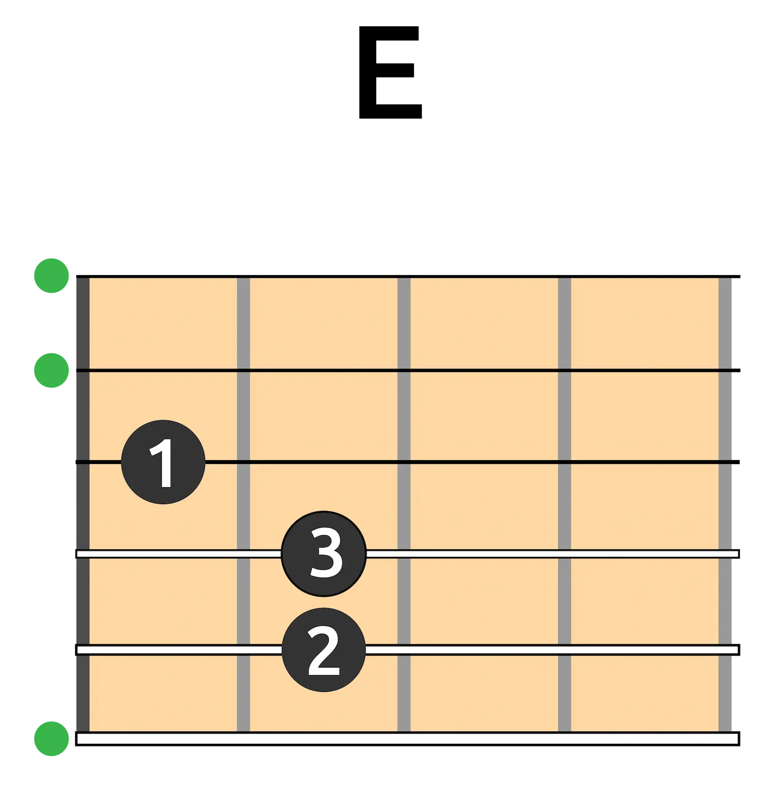
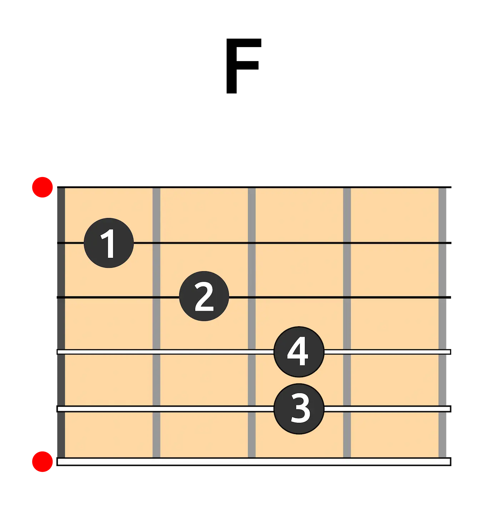
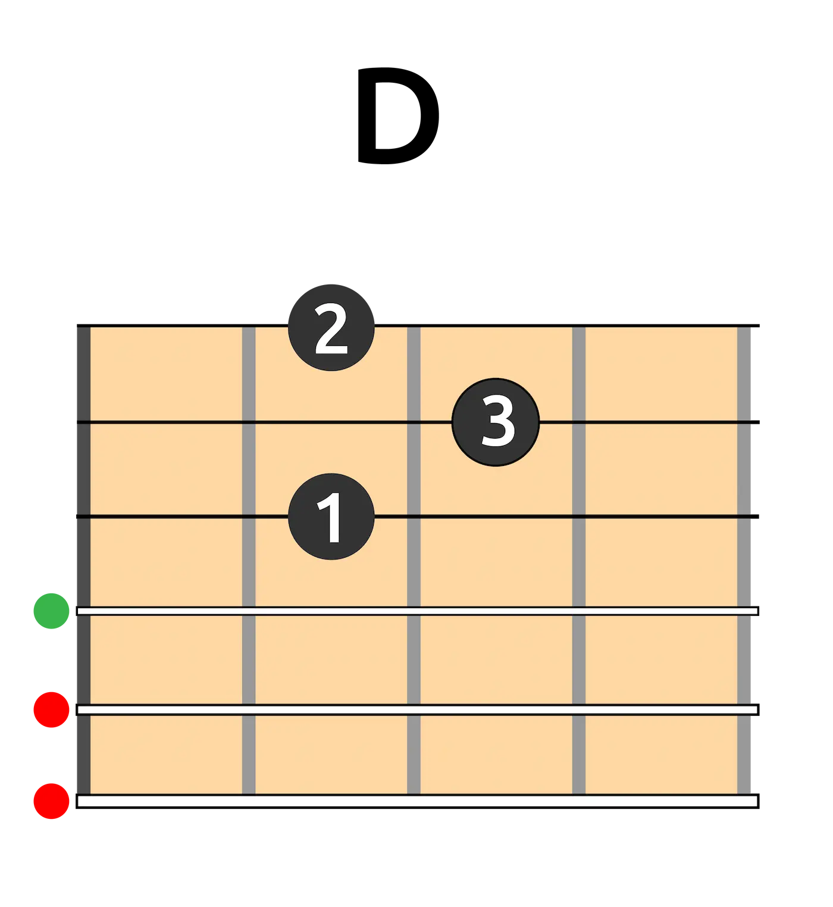
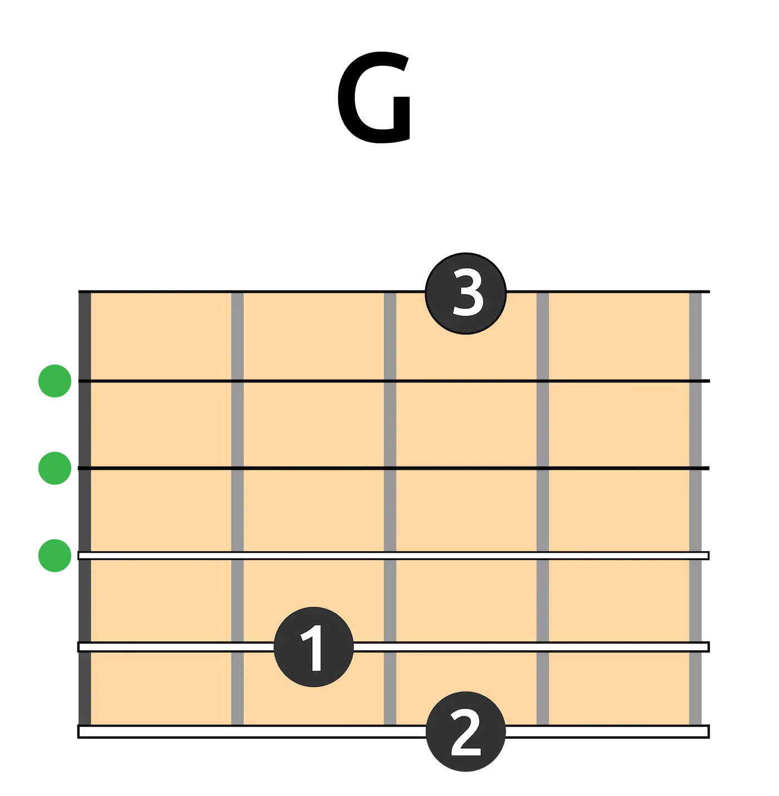
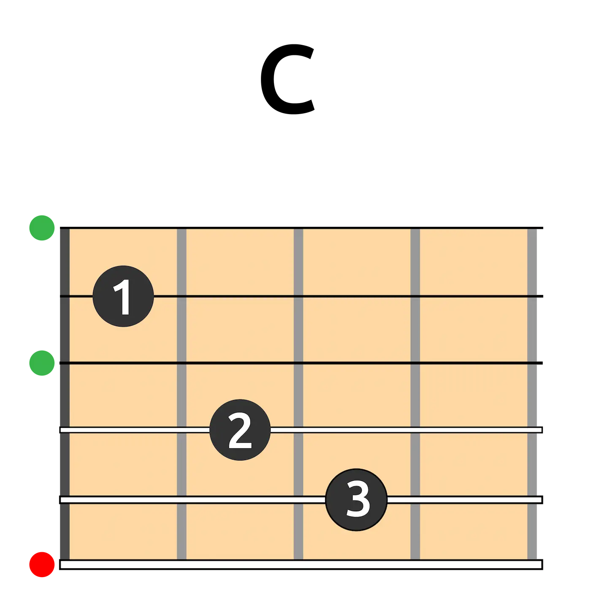
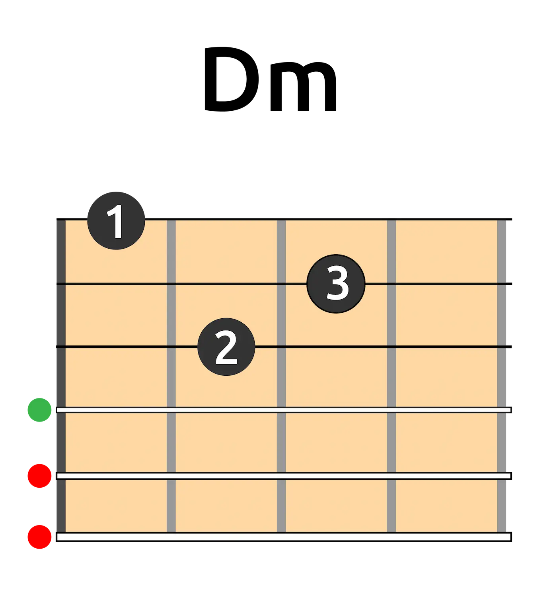
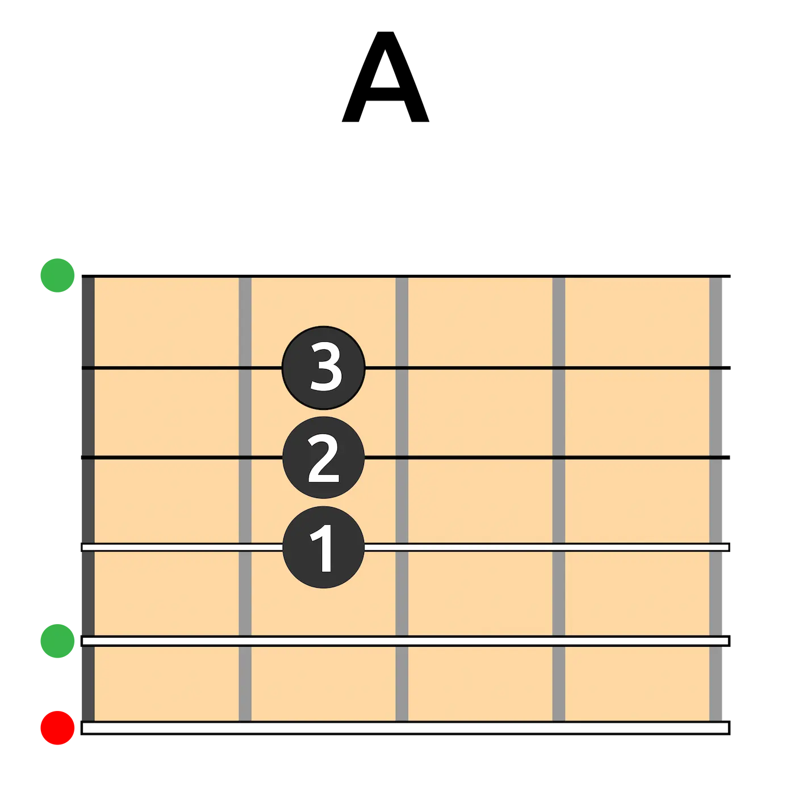
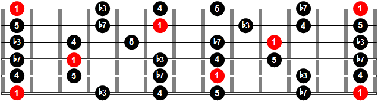

GUITARRA PARA PRINCIPIANTES
ACORDES BÁSICOS
E

F

D

G

C

Dm

A

ESCALAS BÁSICAS
MAYOR

MENOR

PENTATÓNICA MAYOR

PENTATÓNICA MENOR

GUÍA DE PRÁCTICA
¡Es hora de aplicar lo aprendido! Esta sección te ofrece enlaces directos a las tablaturas (acordes) y canciones en YouTube para que puedas practicar con contexto real. Toca con el audio y concéntrate en el ritmo y los cambios de acordes.
1. Fuentes de Ortiz (Ed Maverick)
Ver Tablatura en Ultimate Guitar | Escuchar en YouTube
2. Vámonos a Marte (Kevin Kaarl)
Ver Tablatura en Ultimate Guitar | Escuchar en YouTube
3. Perfect (Ed Sheeran)
Ver Tablatura en Ultimate Guitar | Escuchar en YouTube